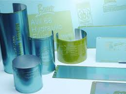

Block printing, called tarsh in Arabic, developed in Arabic Egypt during the ninth and tenth centuries, mostly for prayers and amulets. There is some evidence to suggest that these print blocks made from non-wood materials, possibly tin, lead, or clay. The techniques employed are uncertain, however, and they appear to have had very little influence outside of the Muslim world. Though Europe adopted woodblock printing from the Muslim world, initially for fabric, the technique of metal block printing remained unknown in Europe. Block printing later went out of use in Islamic Central Asia after movable type printing was introduced from China.
The earliest known woodcut, 1423, Buxheim, with hand-colouring Block printing first came to Europe as a method for printing on cloth, where it was common by 1300. Images printed on cloth for religious purposes could be quite large and elaborate. When paper became relatively easily available, around 1400, the medium transferred very quickly to small woodcut religious images and playing cards printed on paper. These prints produced in very large numbers from about 1425 onward. Around the mid-fifteenth-century, block-books, woodcut books with both text and images, usually carved in the same block, emerged as a cheaper alternative to manuscripts and books printed with movable type. These were all short heavily illustrated works, the bestsellers of the day, repeated in many different block-book versions: the Ars moriendi and the Biblia pauperum were the most common. There is still some controversy among scholars as to whether their introduction preceded or, the majority view, followed the introduction of movable type, with the range of estimated dates being between about 1440 and 1460.
Main article: Printing press Around 1450, Johannes Gutenberg introduced the first movable type printing system in Europe. He advanced innovations in casting type based on a matrix and hand mould, adaptations to the screw-press, the use of an oil-based ink, and the creation of a softer and more absorbent paper.[17] Gutenberg was the first to create his type pieces from an alloy of lead, tin, antimony, copper and bismuth – the same components still used today.[18] Johannes Gutenberg started work on his printing press around 1436, in partnership with Andreas Dritzehen – whom he had previously instructed in gem-cutting – and Andreas Heilmann, the owner of a paper mill.[13] Compared to woodblock printing, movable type page setting and printing using a press was faster and more durable. Also, the metal type pieces were sturdier and the lettering more uniform, leading to typography and fonts. The high quality and relatively low price of the Gutenberg Bible (1455) established the superiority of movable type for Western languages. The printing press rapidly spread across Europe, leading up to the Renaissance, and later all around the world. Page-setting room - c. 1920 Gutenberg's innovations in movable type printing have been called the most important invention of the second millennium.
Miehle press printing Le Samedi journal. Montreal, 1939. Main article: Letterpress printing Letterpress printing is a technique of relief printing. A worker composes and locks movable type into the bed of a press, inks it, and presses paper against it to transfer the ink from the type which creates an impression on the paper. Letterpress printing was the normal form of printing text from its invention by Johannes Gutenberg in the mid-15th century and remained in wide use for books and other uses until the second half of the 20th century, when offset printing was developed. More recently, letterpress printing has seen a revival in an artisanal form.

Offset printing is a widely used printing technique. Offset printing is where the inked image is transferred (or "offset") from a plate to a rubber blanket.
An offset transfer moves the image to the printing surface. When used in combination with the lithographic process, a process based on the repulsion of oil
and water; the offset technique employs a flat (planographic) image carrier. So, the image to be printed obtains ink from ink rollers, while the
non-printing area attracts a film of water, keeping the non-printing areas ink-free.
Currently, most books and newspapers are printed using the technique of offset lithography.
By 2005, Digital Printing accounts for approximately 9% of the 45 trillion pages printed annually around the world.
Printing at home, an office, or an engineering environment is subdivided into:
small format (up to ledger size paper sheets), as used in business offices and libraries
wide format (up to 3' or 914mm wide rolls of paper), as used in drafting and design establishments.
Some of the more common printing technologies are:
Vendors typically stress the total cost to operate the equipment, involving complex calculations that include all cost factors involved in the operation as well as the capital equipment costs, amorttization, etc. For the most part, toner systems are more economical than inkjet in the long run, even though inkjets are less expensive in the initial purchase price. Professional digital printing (using toner) primarily uses an electrical charge to transfer toner or liquid ink to the substrate onto which it is printed. Digital print quality has steadily improved from early color and black and white copiers to sophisticated colour digital presses such as the Xerox iGen3, the Kodak Nexpress, the HP Indigo Digital Press series, and the InfoPrint 5000. The iGen3 and Nexpress use toner particles and the Indigo uses liquid ink. The InfoPrint 5000 is a full-color, continuous forms inkjet drop-on-demand printing system. All handle variable data, and rival offset in quality. Digital offset presses are also called direct imaging presses, although these presses can receive computer files and automatically turn them into print-ready plates, they cannot insert variable data. Small press and fanzines generally use digital printing. Prior to the introduction of cheap photocopying the use of machines such as the spirit duplicator, hectograph, and mimeograph was common.
3D Printing is a form of manufacturing technology where physical objects are created from three-dimensional digital models using 3D printers. The objects are created by laying down or building up many thin layers of material in succession. The technique is also known as additive manufacturing, rapid prototyping, or fabricating.